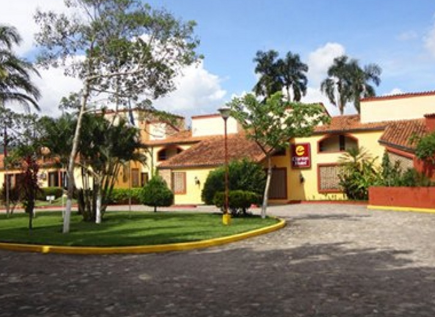
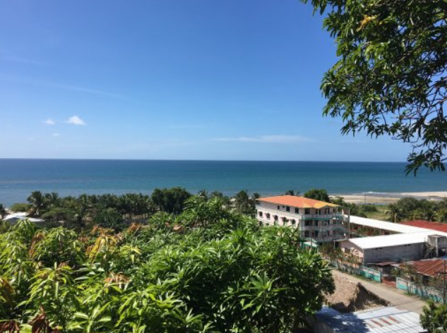
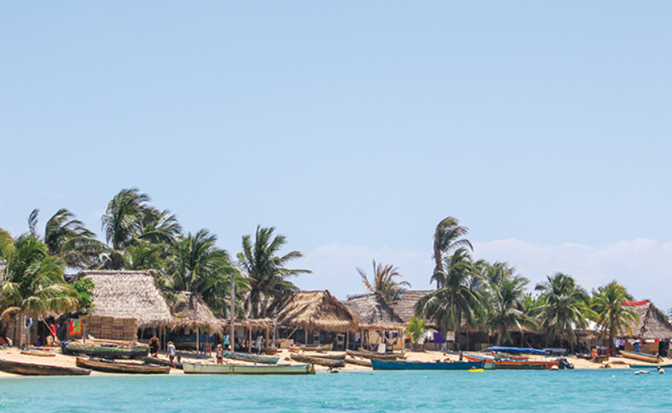
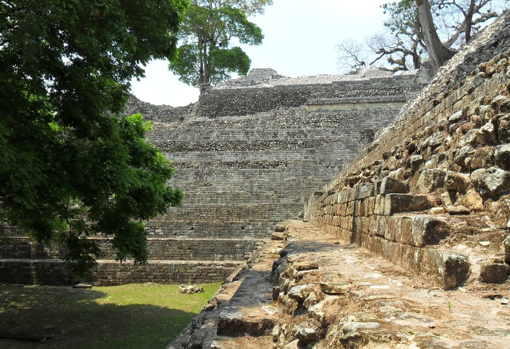

1. America
온두라스
▶ 여행시기: 5월 ~ 6월▶ 추천 장소
|  | 빨간 타일을 얹은 지붕이 있는 하얀 어도비 벽돌집 사이로 자갈길이 뻗어있는 코판 루이나스는 유명한 마야 유적에서 1km 떨어져 있다. 마을은 예쁜 식민지 시대 성당과 시간이 멈춘 듯한 평화로운 분위기를 느끼게 한다. 고고학적 유적은 매일 개방되며 그 중에는 대광장의 석비나 613년 당시의 코판 지도자의 초상, 경기장, 상형문자의 층계, 코판의 열여섯 왕이 조각된 멋진 부조가 있는 아크로폴리스 등이 있다. 마을에서 한시간 차로 떨어진 곳에는 온천이 있으며 가까운 곳에 그림 같은 산지 마을인 산타 리타 데 코판(Santa Rita de Copan)이 있는데 이 곳에는 아름다운 광장과 평화로운 식민지 시대의 성당이 있다. |
|  | 텔라는 많은 여행자들이 좋아하는 온두라스의 카리브해 해변 마을이다. 이 마을은 작고 조용한 곳으로 맛있는 해산물과 여러 좋은 숙소들 그리고 북부 연안에서 가장 아름다운 해변들 중 몇 곳이 모여있다. 이곳은 기본적으로 느긋하게 쉬면서 단순한 생활을 즐기기 좋은 곳이다. 2,500만 US$를 들인 텔라 만 개발 계획은 이 지역의 여행 산업 붐을 일으키고 있으므로 아직 망가지지 않고 조용할 때에 보는 것이 좋을 것이다. |
|  | 가장 좋은 해변은 마을 동쪽에 호텔 빌라스 텔라마르(Villas Telamar) 앞에 있다. 이곳에는 가루처럼 부드러운 모래와 그늘진 코코넛 나무의 과수원이 있다. 작은 트루힐로 마을은 온두라스 역사에서 중요한 역할을 하였다. 트루힐로 만의 커다란 원호 안에 자리잡은 이곳은 아름다운 해변과 코코넛 야자수, 그리고 온화한 바다로도 유명하다. 온두라스의 가장 훌륭한 카리브해 해변 마을로서 명성을 얻고 있지만 6월 말에 매년 열리는 축제를 제외하고는 보통 관광객들이 북적거리지 않는다. |
|  | 매력적인 해변을 제외하고도 이 마을에는 17세기의 성채와 윌리암 워커의 무덤, 고고학 박물관이 있다. 마을 서쪽에는 가리푸나(Garifuna)사람들이 사는 바리오 크리스탈레스(Barrio Cristales)가 있는데 이곳은 음악과 춤 그리고 환락의 장소이기도 하다. |